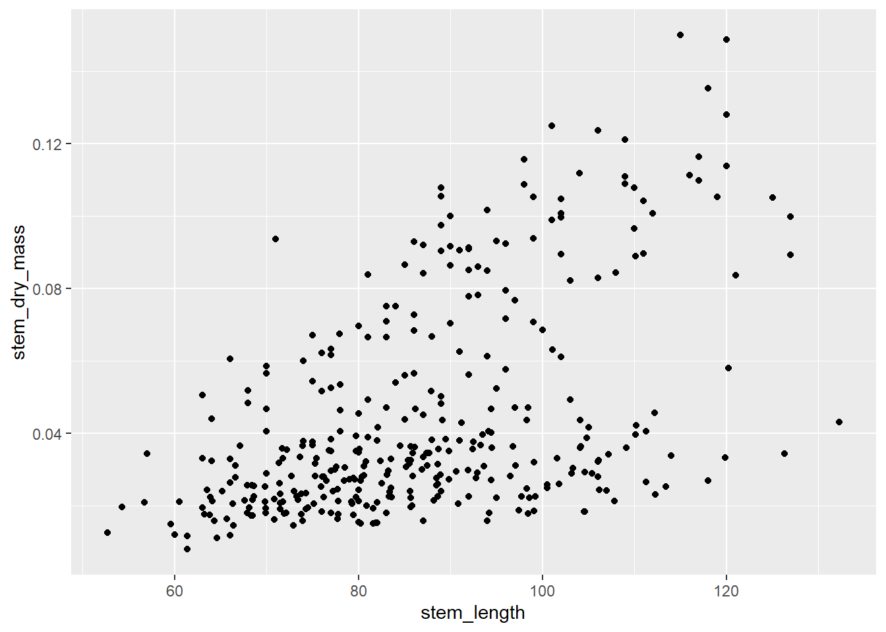
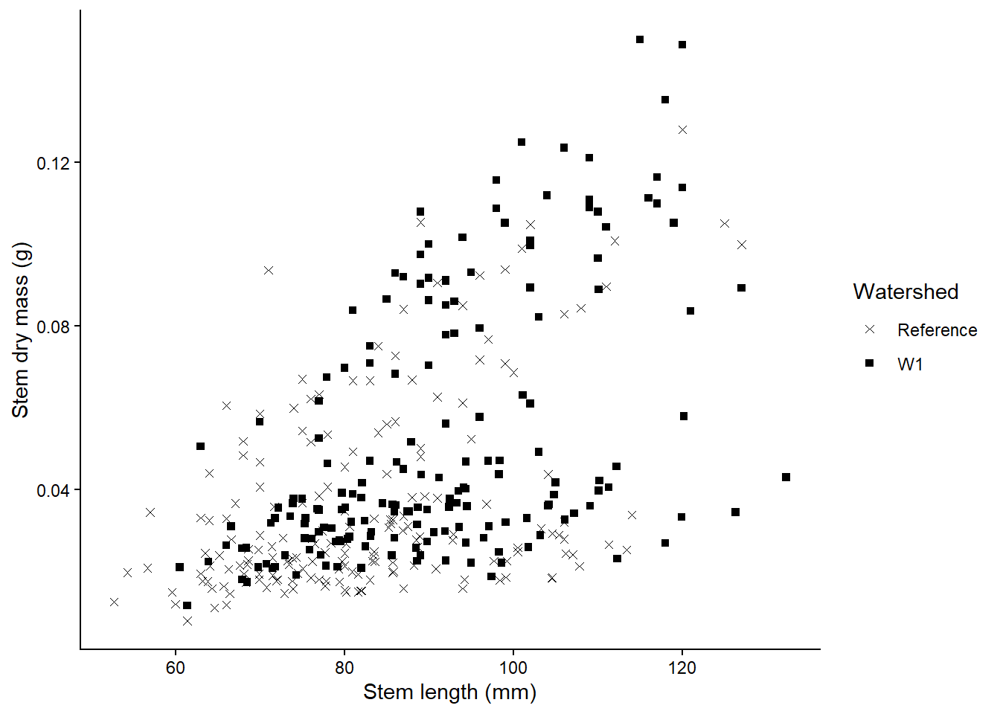
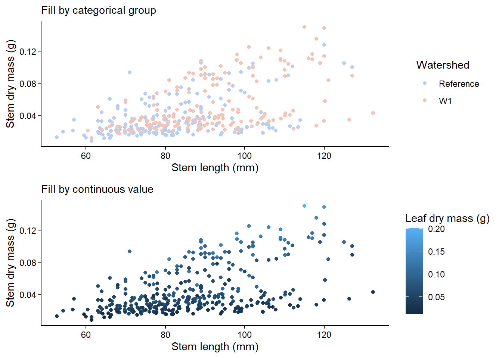

In this workshop, you will learn how to summarise different types of ecological data using appropriate statistical measures and visualisations. Understanding the right measures of central tendency and spread is critical before conducting any formal hypothesis testing.
Background reading
Before we can decide on the appropriate descriptive stats it helps to understand the scale of your variable. The table below outlines appropriate measures for both qualitative and quantitative variables:
Data Scale
Type
Definition
Examples
Central Tendency
Spread/Variation
Nominal
Qualitative
Named categories with no intrinsic order
sex (male/female), species name
Mode
Count, Proportion
Ordinal
Qualitative
Named categories data with a natural order
life stage (egg, juvenile, adult)
Median, Mode
Range, IQR
Interval
Quantitative
Equal intervals between values but no true zero
temperature, pH, dates
Mean, Median
SD, SE, CI
Ratio
Quantitative
Equal intervals and a true zero
length, age, body mass
Mean, Median
SD, SE, CV, IQR, CI, variance
When laying out your datasheet for your study, it is important to know what data types each column will be when imported into R. Here is an example data sheet that is color-coded according to the type of variable: nominal, continuous, ordinal, and binary.
Key Terms used in this workshop:
Mean: Average value. Use with symmetric, normally distributed data.
Median: Middle value. More robust to outliers and skewed data.
Mode: Most frequent value (useful for categories).
Standard Deviation (SD): How spread out the data is.
Standard Error (SE): SD divided by the square root of n (how precise the mean is).
Coefficient of Variation (CV): SD / Mean. Compares spread across variables.
Interquartile Range (IQR): Range between 25th and 75th percentiles.
Confidence Interval (CI): A range that likely contains the true mean.
Variance: How much values differ from the average value.
Deciding on whether to use mean, median, or mode will depend on how your data is distributed. A skewed distribution can result in different outcomes of central tendancy if you are calculating using the mean, median, and mode.
Here is a CrashCourse Statistics video on The Shape of Data: Distributions on other types of distributions encountered (11:22 min long). In practice, mode is rarely used, but is often included in a discussion of mean and medians. From here, we will focus on mean and median, which can be calculated using the mean() and median() function, respectively.
If the data is normally distributed, the mean and median will be similar (e.g. normal = 10), but if the data is skewed, the mean and median will show different central tenancies (e.g. mean = 4.7, median = 3).
We can calculate the standard deviation, standard error, confidence interval, coefficient of variation, and variance with the following code can be calculated using the mean() and median() function, respectively.
dist_data %>% dplyr::summarise(n =length(skewed),mean =mean(skewed), # required for calculation of CIvariance =var(skewed),sd =sd(skewed), # standard deviationse =sd(skewed) /sqrt(n), # standard errorci_lower =mean(skewed) -qt(0.975, df = n -1) * se, # lower 5%ci_upper =mean(skewed) +qt(0.975, df = n -1) * se, # lower 95%cv =sd(skewed) /mean(skewed) # coefficient of variation )
n mean variance sd se ci_lower ci_upper cv
1 100 4.656321 13.85892 3.722757 0.3722757 3.917645 5.394997 0.799506
Remember that the skewed data is strongly right-skewed so SD and CI must be interpreted carefully.
SD measures spread around the mean assuming deviations are roughly symmetric.
95% CI assumes the sampling distribution of the mean is approximately normal.
Skewed data violate this assumption. SE & CI describe uncertainty in the mean, not variability of the data.
For data measured at an ordinal level, the range and interquartile range are the only appropriate measures of variability.
For more continuous level data like interval and ratio levels, the SD and variance are also applicable.
Here is a visualisation on SD (top) and 95% CI (bottom) for normal skewed data.
Boxplots are better alternatives to represent spread for skewed data (see below on quantiles).
Other types of descriptive stats include quantiles, maximum, minimum, and range. Quantiles divide a sorted dataset or probability distribution into equal-sized subgroups. The max, min, and range can be calculated within the summarise() function, while the quantiles can be calculated with the base R quantile() function.
R really shines when it comes to data visualisation and with some tweaks, you can make eye-catching plots that make it easier for people to understand your science. The ggplot2 package, part of the tidyverse collection of packages, as well as its many extension packages are a great tool for data visualisation.
The gg in ggplot2 stands for grammar of graphics. Writing the code for your graph is like constructing a sentence made up of different parts that logically follow from one another. In a more visual way, it means adding layers that take care of different elements of the plot. Your plotting workflow will therefore be something like creating an empty plot, adding a layer with your data points, then your measure of uncertainty, the axis labels, and so on.
Independent vs dependent variables
In this example experiment data sheet, we have one independent and three dependent variables.
The other variables in the sheet can’t be classified as independent or dependent, but they do contain data that you will need in order to interpret your independent and dependent variables.
Plot Types
There are so many ways to visualise your data beyond this workshop, so we will only focus a few common ones you will likely use in your report.
Let’s say we are interested in visualising at differences in stem length in calcium-treated (W1) versus untreated (Reference) watersheds, there are a couple of ways we can visualise this.
A histogram and density plot takes as input a numeric variable only. The variable is cut into several bins, and the number of observation per bin is represented by the height of the bar. It is possible to represent the distribution of several variable on the same axis using this technique.
To create a histogram by group, use the geom_histogram() function within ggplot.
plant_task_clean_data %>%ggplot(aes(x = stem_length, fill = watershed)) +geom_histogram(alpha =0.4, position ="identity") # changed transparency due to overlap in watershed groups
`stat_bin()` using `bins = 30`. Pick better value `binwidth`.
To create a density plot by group, use the geom_density() function within ggplot.
plant_task_clean_data %>%ggplot(aes(x = stem_length, fill = watershed)) +geom_density(alpha =0.4, position ="identity") # changed transparency due to overlap in watershed groups
A boxplot provides an effective summary of one or more numeric variables, showcasing key statistical features through its distinct elements:
Median Line: The line that divides the box represents the median of the data. For example, if the median is 10, this indicates that half of the data points lie below 10 and half above.
Quartiles: The ends of the box indicate the upper (Q3) and lower (Q1) quartiles. If Q3 is 15, this means that 75% of the observations fall below this value.
Interquartile Range (IQR): The difference between Quartiles 1 and 3 is known as the interquartile range (IQR), which measures the spread of the middle 50% of the data.
Whiskers: The lines extending from the box show the range of values within Q3 + 1.5 × IQR to Q1 - 1.5 × IQR, representing the highest and lowest values, excluding outliers.
Outliers: Dots (or other markers) beyond the whiskers indicate potential outliers in the dataset.
To create a boxplot by group, use the geom_boxplot() function within ggplot.
plant_task_clean_data %>%ggplot(aes(x = watershed, y = stem_length)) +geom_boxplot()
To plot the mean and standard deviation as a bar plot, use the geom_bar() function with geom_errorbar().
To plot the mean and standard deviation as a dot plot, use the geom_pointrange(). It is also useful to include the raw data in this case, which you will need to call in the plant_task_clean_data and plant_sum separately and plot the raw data with the geom_jitter() function.
# mean +/- sd only.mean_plot <- plant_sum %>%ggplot() +geom_pointrange(aes(x = watershed, y = mean, ymin = mean-sd, ymax = mean+sd))# including raw dataraw_plot <-ggplot() +geom_jitter(data = plant_task_clean_data, aes(x = watershed, y = stem_length), alpha =0.1, position =position_jitter(0.2)) +#raw datageom_pointrange(data = plant_sum, aes(x = watershed, y = mean, ymin = mean-sd, ymax = mean+sd))cowplot::plot_grid(mean_plot, raw_plot, ncol =2, align ="v")
A scatterplot displays the relationship between 2 numeric variables. For each data point, the value of its first variable is represented on the X axis, the second on the Y axis
To create a scatterplot, use the geom_point() function within ggplot.
plant_task_clean_data %>%ggplot(aes(x = stem_length, y = stem_dry_mass)) +geom_point()

To create a scatterplot by group, include a colour or shape level within ggplot.
To make your figures publication ready, here are some advice on changing the labels, adding colour, changing the shape and size, plotting multiple plots.
ggplot has some default themes you can use for your figures instead of manually changing each feature. Here is what the themes look like when you apply them.
To add a labels independently for the title using ggtitle(), subtitle using ggsubtitle(), x-axis label using xlab(), y-axis label using ylab(), or all within the labs() function as shown here:
plant_task_clean_data %>%ggplot(aes(x = watershed, y = stem_length)) +geom_boxplot() +# Modify herelabs(title ="Your title",subtitle ="your subtile",x ="Treatment", #x = NULL, # You can also remove labels by calling NULLy ="Stem length (mm)") +theme_classic()
More options can be found here such as changing the size and colour of the text, or spliting long titles into multiple lines.
To manually change the point shapes, use the scale_shape_manual() function, and choose the shape with it’s associated number. More options such as shape size can be found here.
plant_task_clean_data %>%ggplot(aes(x = stem_length, y = stem_dry_mass, shape = watershed)) +geom_point() +# Modify herescale_shape_manual(values =c(4, 15))+labs(x ="Stem length (mm)", y ="Stem dry mass (g)",shape ="Watershed") +theme_classic()

There is a vast number of R libraries that that are tailored to create pretty palettes. You can explore them in your own time. Here is an R package called colorspace which I like to use often.
You can change the outline or fill colour overall or by groups (e.g. watershed) with either method below. Note, you can either use existing R base colour like tomato1, specific R package color names, or hex values (e.g. #000000 for black) for very specific colours.
single_colour <- plant_task_clean_data %>%ggplot(aes(x = watershed, y = stem_length)) +geom_boxplot(colour ="darkred") +# Modify herelabs(subtitle ="Change a single outline colour",x ="Treatment", y ="Stem length (mm)") +theme_classic()single_fill <- plant_task_clean_data %>%ggplot(aes(x = watershed, y = stem_length)) +geom_boxplot(fill ="#F5C4B8") +# Modify herelabs(subtitle ="Change a single fill colour",x ="Treatment", y ="Stem length (mm)") +theme_classic()group_colour <- plant_task_clean_data %>%ggplot(aes(x = watershed, y = stem_length, colour = watershed)) +# Modify heregeom_boxplot() +# Modify herescale_color_manual(values =c("darkblue", "darkred")) +labs(subtitle ="Change outline colour by group",x ="Treatment", y ="Stem length (mm)",colour ="Watershed") +theme_classic()group_fill <- plant_task_clean_data %>%ggplot(aes(x = watershed, y = stem_length, fill = watershed)) +# Modify heregeom_boxplot() +# Modify herescale_fill_manual(values =c("#B8CEF5", "#F5C4B8")) +labs(subtitle ="Change fill colour by group",x ="Treatment", y ="Stem length (mm)",fill ="Watershed") +theme_classic()cowplot::plot_grid(single_colour, single_fill, group_colour, group_fill, ncol =2, align ="v")
You can also colour by gradient if the colour values are continuous. Here is an example with a scatter plot.
cat_plot <- plant_task_clean_data %>%ggplot(aes(x = stem_length, y = stem_dry_mass, colour = watershed)) +geom_point() +# Modify herescale_colour_manual(values =c("#B8CEF5", "#F5C4B8")) +labs(subtitle ="Fill by categorical group",x ="Stem length (mm)", y ="Stem dry mass (g)",colour ="Watershed") +theme_classic()con_plot <- plant_task_clean_data %>%ggplot(aes(x = stem_length, y = stem_dry_mass, colour = leaf_dry_mass)) +geom_point() +labs(subtitle ="Fill by continuous value",x ="Stem length (mm)", y ="Stem dry mass (g)",colour ="Leaf dry mass (g)") +theme_classic()cowplot::plot_grid(cat_plot, con_plot, ncol =1, align ="v")

The facet approach partitions a plot into a matrix of panels. Each panel shows a different subset of the data. Let’s seperate out plant_task_clean_data by year using the facet_grid() function.
# Split in vertical directionplant_task_clean_data %>%ggplot(aes(x = stem_length, y = stem_dry_mass, colour = watershed)) +geom_point() +scale_colour_manual(values =c("#B8CEF5", "#F5C4B8")) +labs(x ="Stem length (mm)", y ="Stem dry mass (g)",colour ="Watershed") +theme_classic() +# Modify herefacet_grid(year ~ .)
# Split in horizontal directionplant_task_clean_data %>%ggplot(aes(x = stem_length, y = stem_dry_mass, colour = watershed)) +geom_point() +scale_colour_manual(values =c("#B8CEF5", "#F5C4B8")) +labs(x ="Stem length (mm)", y ="Stem dry mass (g)",colour ="Watershed") +theme_classic() +# Modify herefacet_grid(. ~ year)
Facets can be placed side by side using the function facet_wrap() as followed. Here, we switch to have the years coloured and the plot split by watershed. How you decide which variable to split and colour will depend on your story and hypothesis.
plant_task_clean_data %>%ggplot(aes(x = stem_length, y = stem_dry_mass, colour =factor(year))) +geom_point() +scale_colour_manual(values =c("#B8CEF5", "#F5C4B8")) +labs(x ="Stem length (mm)", y ="Stem dry mass (g)",colour ="Watershed") +theme_classic() +# Modify herefacet_wrap(~ watershed)
If you have different types of plots you would like to join together, the R package cowplot does a good job of this. More details on cowplot can be found here, but here is a taste of how to use cowplot. The figure legends are position at the bottom to look nicer using theme(legend.position="bottom").
Load you R file from week 2 that contained your plant_task_data_clean. Under the header “Week 4 workshop - Descriptive statistics”, complete the following tasks:
1. Check the distribution of the total dry mass. What kind of distribution is this data?
You do not need to make the plot pretty here.
2. Calculate the central tendency, spread, and sample size of leaf_dry_mass by watershed, and year
Decide on calculations of central tendency and spread you will apply based on the distribution observed.
What are the numbers and sample size for year 2003 W1?
Are they similar to year 2004 W1? If not, what’s the difference?
3. Plot the central tendency and spread with the raw data in a figure by watershed, and year
Decide on which figure to create based on the workshop.
Make a publication ready figure (include colour).
For the adventurous folks
We will use a new dataset provided by lterdatasampler, called pie_crab. The pie_crab contains body size data of Atlantic marsh fiddler crab (Minuca pugnax) across various salt marshes throughout the eastern coast of the United States to test the Bergmann’s rule, which predicts that organisms at higher latitudes are larger than ones at lower latitudes.
13 marshes were sampled on the Atlantic coast of the United States in summer 2016, spanning > 12 degrees of latitude, from northeast Florida to northeast Massachusetts. Between 25 and 37 adult male fiddler crabs were collected, and their sizes recorded, from each marsh between 2016-07-24 and 2016-08-13.
Here is the metadata of the pie_crab data: - date: Date of collection - latitude: Latitude of the collection site in degrees - site: The site ID - size: Mean carapace width (mm) - air_temp: The mean air temperature of the day. - air_temp_sd: The standard deviation of the measured air temprature. Also an indicator of seasonality - water_temp - water_temp_sd - name: Names of the sampled Marshes.
#install.packages("lterdatasampler")# Load R packagelibrary(lterdatasampler)# Load 'pie_crab' from the R packageglimpse(pie_crab)
Check the data structure and types and correct any mistakes
Check the data distribution carapace size. Are there outliers?
2. Calculate the central tendency, spread, and sample size of the carapace size size by site and latitude
Decide on calculations of central tendency and spread you will apply based on the distribution observed.
Which site has the highest average carapace size?
Which site has the lowest sample size?
3. Plot the relationship between latitude and mean carapace width (plus raw carapace width) to test the Bergmann’s rule in Fidler crabs
Make a publication ready figure (include colour).
What relationship can you see?
Extra Stuff
Time series
Many of you might be working with environmental data (e.g. soil or air temperatures and humidity) collected from deployed data loggers. While, you may not not use the whole time series dataset for your study, it could useful to visualise the study period and highlight where you took your samples (e.g. using geom_vline().
Here is a dataset called winter_clim_dat.csv that includes outside (EXT) and inside (DEEP) cave air temperature and humidity of two sites (MAM, YES). Using everything we learnt today, you can create a figure like this using the geom_line() function and separating temperature and humidity by location (EXT, DEEP) and site (MAM, YES).
The code below also includes ways of converting raw date values into meaningful values that R can interpret correctly (with as.POSIXct() function). The link also discusses ways of dealing with missing and weird time series data.
clim_raw <-read_csv("https://raw.githubusercontent.com/nicholaswunz/ECS200-Workshop/refs/heads/main/data/winter_clim_dat.csv") %>% dplyr::mutate(date_time =as.POSIXct(date_time, format ="%d/%m/%Y %H:%M"), # convert character to date and timeDOY =as.POSIXlt(date_time)$yday, # calculate day of the yearmonth =format(as.Date(date_time, format ="%m/%d/%Y"),"%m"), # month as numericmonth_cat =format(as.Date(date_time, format ="%m/%d/%Y"),"%B"), # month as namelocation =factor(location, levels =c('EXT', 'DEEP'))) temp_plot <- clim_raw %>%ggplot() +geom_line(aes(x = date_time, y = air_temp, colour = location)) +scale_colour_manual(values =c("#F5C4B8", "darkred")) +# manually change colourgeom_vline(xintercept =as.POSIXct(as.Date("2023-07-10")), # add horizontal line when data were sampledlinetype ="dashed") +geom_vline(xintercept =as.POSIXct(as.Date("2023-08-12")),linetype ="dashed") +labs(x ="Date", y ="Air temperature (°C)") +theme_classic() +facet_wrap(~ site) # separate by siteRH_plot <- clim_raw %>%ggplot() +geom_line(aes(x = date_time, y = RH, colour = location)) +scale_colour_manual(values =c("#B8CEF5", "darkblue")) +# manually change colourgeom_vline(xintercept =as.POSIXct(as.Date("2023-07-10")), # add horizontal line when data were sampledlinetype ="dashed") +geom_vline(xintercept =as.POSIXct(as.Date("2023-08-12")),linetype ="dashed") +labs(x ="Date", y ="Relative humidity (%)") +theme_classic() +facet_wrap(~ site) # separate by sitecowplot::plot_grid(temp_plot, RH_plot, ncol =1, align ="v")
Beautify figures
If you want to go beyond what we learnt and further enhance your figure production skills, here is a link that provides a tutorial to convert default ggplots to publication ready plots including this one on histograms .